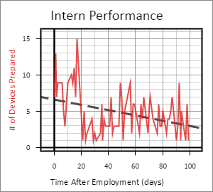
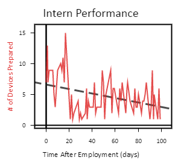
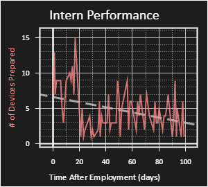
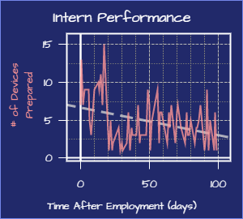
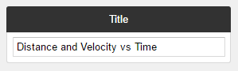
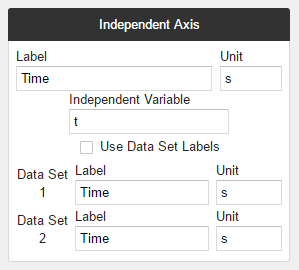
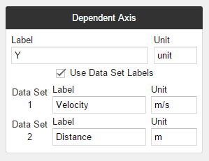

Styling and Labeling Reference
Whenever you make a graph, you want to make sure that the information is clearly labeled and presented in an appropriate style. In this reference, we will cover everything you need to know about styling and labeling your graphs.
Graph Themes
Graph themes are used to change the overall style of the graph, which can be accessed through the Styles menu. The currently built-in themes we have are shown below:
| Theme Name | Preview |
|---|---|
| Standard |  |
| Minimal |  |
| Dark |  |
| Blueprint |  |
Styling Specific Items
Data Sets, Functions, and Curve Fits can all be individually styled. You can modify the styles all at once in the Styles menu, or you can modify them individually in their respective menus. The following example shows the two locations that you could modify the style of Data Set 2:
Graph Labels
Explaining the labeling system is best done by example. Here we have a graph that makes use of labels effectively:
These labels can be changed via the Labels menu. Below we break down how the Labels menu was used to create the graph:
| Explanation | Screenshot |
|---|---|
| Here is the Title field. The title appears at the very top of the graph, as shown above. |  |
|
Here you can adjust labels for the Independent Axis. Each axis has the option to either use a single
master label (the first item in the section), or use the Data Set labels (the last items in the section).
You can choose which option you want with the Use Data Set Labels checkbox. In our example, the checkbox was left unchecked, since we only wanted a single label on the Time axis. You might have noticed the Independent Variable field. This does not affect any of the labels on the graph, but it does affect expressions. Check out the Expression Reference to learn more. |
 |
|
The Dependent Axis section works just like the Independent Axis section.
For this section, we checked the checkbox since we wanted to distinguish between the two Data Sets. |
 |